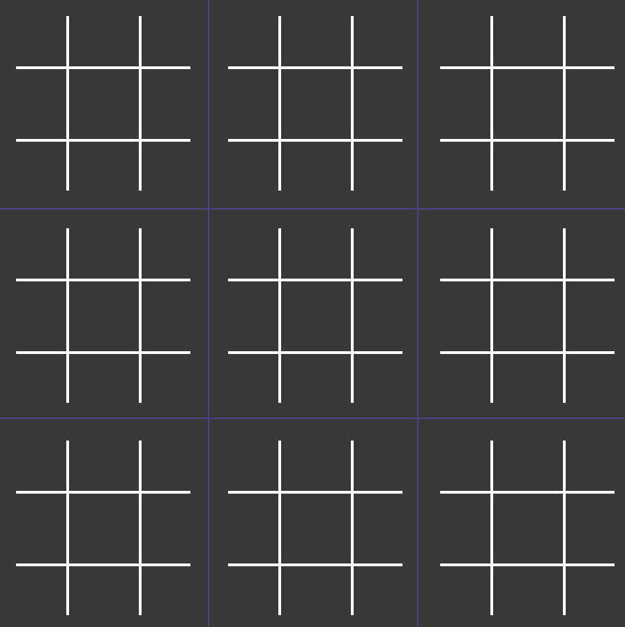

Il Supertris è una variante del classico gioco del tris: in ogni casella della classica griglia 3x3, è aggiunta un'ulteriore griglia 3x3.

- Il primo giocatore posiziona la croce (x) dovunque nelle 81 caselle;
- In base a dove viene posizionata, "invia" l'altro giocatore in un mini-tabellone specifico
(se ad esempio x gioca nella casella centrale del mini-tabellone in alto a sinistra, o deve giocare nel mini-tabellone centrale);
- Il secondo giocatore a sua volta farà la stessa cosa, rispettando la restrizione della mossa precedente e inviando l'avversario su un altro mini-tabellone.
- Ogni volta che un mini-tabellone è completato, viene assegnato al giocatore che ha completato un tris al suo interno
(nel caso in cui sia un pareggio, il tabellone non viene assegnato a nessuno dei due giocatori).
- Se una mossa indirizza un giocatore in un tabellone terminato, quel giocatore potrà giocare dove vuole.
- La partita termina quando viene effettuato un tris sul tabellone più grande.